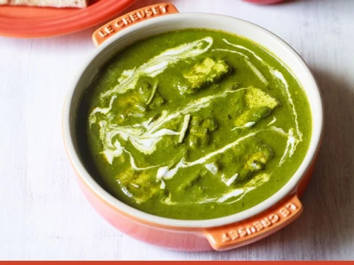
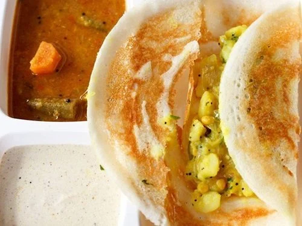
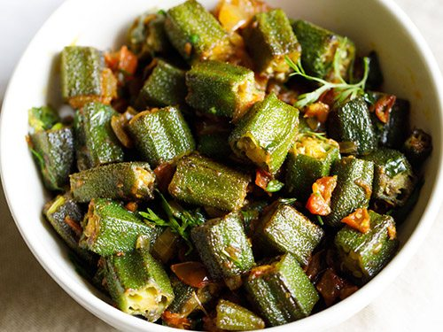
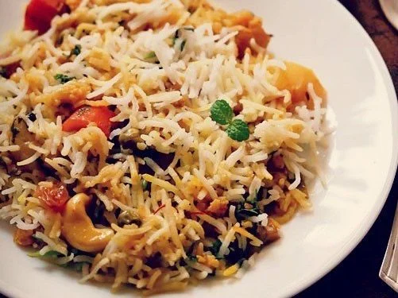

Palak Paneer
–This delicious creamy dish is made with fresh spinach leaves, paneer (firm cottage cheese), onions, tomatoes, herbs and spices. This delicious palak paneer recipe is the way my mom has always made it for our family. She has been making this recipe for years, has passed it onto me and now I am so happy to share it here. Masala dosa
– there are many popular varieties of dosa made in south India like Rava dosa, Neer dosa and Set dosa. they are usually had with Coconut chutney and sambar. You can have dosa any time of the day. From breakfast to lunch to dinner. They are healthy and taste very good. this masala dosa recipe will give you a restaurant style masala dosa, where the dosa is crisp and served with a delicious potato masala. 🙂 Bhindi masala
– This is a semi dry lightly spiced Punjabi bhindi masala made with okra, onions and tomatoes. It goes very well with some soft phulkas or rotis. It is made in an onion-tomato base with the regular masalas (spice powders) – a combination that is often used in Punjabi recipes. Gluten-free and vegan.

Chana masala
– there are many ways chickpeas curries are made in regional Indian cuisine. this chana masala is made with freshly powdered spices, onions, tomatoes, herbs making the chana taste like the ones you get on the streets of Delhi. Chana masala is relished with poori or rice or roti or paratha or Naan or Kulcha.Veg Biryani
– there are many varieties of biryani made in India. An authentic veg biryani is always slow cooked on dum. This cooking on dum gives the biriyani its uniqueness and originality. This is how the biryani has the beautiful medley of the aromas, flavors and tastes caused by the blending of the ingredients used in making it. I have shared some popular vegetarian biryani variations and these too have been liked by the readers.Paneer Biryani
Lucknowi Biryani
Mughlai Biryani
Mushroom Biryani
